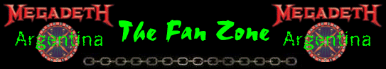

En esta seccion ustedes pueden mandar cualquier cosa... Parece simple y asi los es, cualquier cosa que ustedes hagan y quieran compartir con la gente que visita la pagina la pueden publicar aquí.
Esto habarca desde canciones, dibujos, cuentos, poemas, letras, fotos, anecdotas, programas o cosas que hagas con la computadora... ¡¡lo que ustedes quieran!!. ¡Esta sección es absolutamente libre y esta a disposición de ustedes!.
Para publicar aquí lo que se te de la gana solo tienes que mandarme un mail y ¡listo!.
Hola Exequiel, soy victor me gusta eso de THE FAN ZONE, yo tengo una banda de heavy metal como influencia principal lo tenemos a Megadeth, pero power metal es lo que hacemos, el thrash metal, no es nuestro fuerte...
Es por que tambien escuchamos bandas como Gamma Ray, Stratovarius, Helloween y otras tantas.
Nuestras canciones hablan de muchas consas tanto del amor como de las drogas...
Mi banda se llama MAXIMUM y te dejo por ahora unas de nuestras canciones, espero que las pongas...
 Ver Letras
Ver Letras
Conoce a VAMPIRIA una banda Dark Argentina, tiene un demo del que nos cuentan:
"Este Demo fue grabado íntegramente en forma independiente, el 17 de Septiembre de 1998, en
la ciudad de Olavarría.
Los cuatro temas que contiene, resumen, en gran parte, la idea musical de la banda, que ronda
entre varios géneros de la música heavy (black, doom, death, thrash, heavy clásico).
La producción incluye, además, un track de CD-ROM, que contiene fotos, diseños y
traducciones de las letras"
De este demo podemos escuchar un adelanto de un tema "Legacy In Blood"
CONTACTOS:
Lamadrid 2057 (7400) Olavarría-Buenos Aires-Argentina
Barrio C.E.C.O. Casa 385 (7400) Olavarría-Buenos Aires-Argentina
T.E. : (02284) 427229
(02284) 450367
Mail: Dark_emperor@hotmail.com
Pagina Web: http://habitantes.elsitio.com/vampiria
Esta es la banda de Pablo Iacovone, un havitual colaborador de la pagina.
INTEGRANTES:
- Pablo Iacovone, Batería
- Martín Moreyra, Guitarra
GENERO QUE PRACTICAN:
Hardcore - Punk
TEMA DISPONIBLE EN MP3:
What's Up